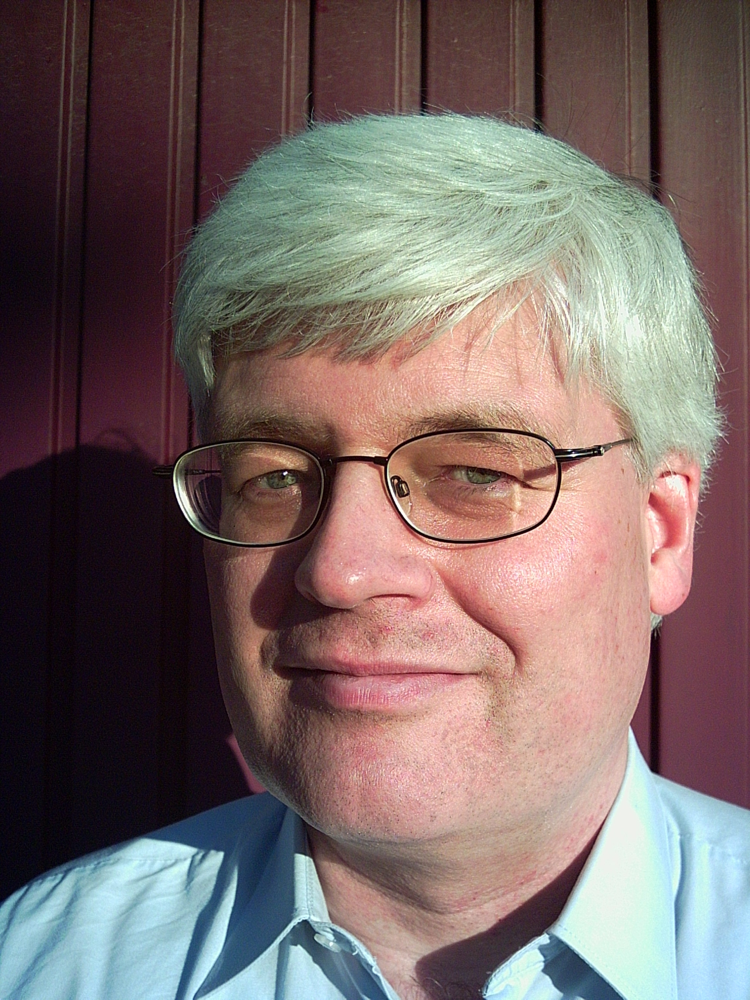

Prabhakar Ranganathan obtained his PhD in Chemical Engineering from Monash University in 2005, after obtaining his MS and B. Tech. from the Indian Institute of Technology Madras in 1998 and 1993. He is currently a Senior Lecturer in the Department of Mechanical and Aerospace Engineering at Monash University which he joined in 2007 after a stint as a Postdoctoral Fellow in the research groups of Prof. Edith Sevick and Prof. David Williams at the Australian National University. He was a Visiting Professor at the Indian Institute of Technology Bombay in 2015. He is currently the President of the Australian Society of Rheology. His research interests are in developing microstructure- based models of unentangled polymer solutions and active suspensions based on mesocale simulations of these fluids, and in using such microstructure-based constitutive models in the computation of the dynamics of the capillary thinning of their slender liquid filaments.
Gareth McKinley FRS is Professor of Teaching Innovation in the Department of Mechanical Engineering at Massachusetts Institute of Technology (MIT). He was educated at the University of Cambridge where he was awarded a Bachelor of Arts (BA) degree followed by a Master of Engineering (MEng) degree as a student of Downing College, Cambridge. He moved to America to complete his PhD at Massachusetts Institute of Technology supervised by Robert C. Armstrong and Robert A. Brown. He served as director of MIT's program in polymer science and technology (PPST) - now Program in Polymers & Soft Matter (PPSM) - from 2004-2009. McKinley is also co-founder of Cambridge Polymer Group, a Boston-based company employing 20+ people and specializing in bespoke instrumentation, materials consulting and orthopedic polymeric materials. McKinley was awarded the 2013 Bingham Medal from the Society of Rheology and the 2014 Gold Medal of the British Society of Rheology. He served as the Editor of the Journal of Non- Newtonian Fluid Mechanics (JNNFM) from 1999 to 2009. A passionate educator, he has won the Bose Award for Teaching and the Jacob Pieter Den Hartog Outstanding Educator Award from MIT. He was elected a member of the National Academy of Engineering of the United States in 2019 and a Fellow of the Royal Society (London). McKinley's work focuses on understanding the rheology of complex fluids such as surfactants, gels and polymers, which are ubiquitous in foods and consumer products. His research interests include non-Newtonian fluid dynamics, microfluidics, extensional rheology, field-responsive materials, super-hydrophobicity and the wetting of nanostructured surfaces.

Burkhard Duenweg has a background in theoretical physics, in particular computational statistical mechanics. He obtained his diploma in 1987, his PhD in 1991, and his "Habilitation" in 2000 (all at the University of Mainz, Germany, where he was appointed Adjunct Professor in 2008). Since 1996, he has been the Senior Staff Scientist at the Max Planck Institute for Polymer Research, Mainz. External stays include his postdoc time during 1991-1993 at the Center for Simulational Physics, Athens, Georgia, USA (funded by the Humboldt Foundation), an interim professorship in Saarbruecken, 2005, and an interim professorship in Darmstadt (2014-15). Since 2010, he has been a Professor at the Department of Chemical Engineering at Monash, within the framework of a Guest Professorship (2010-2016) and an Adjunct Professorship (since then). From 2004-2013 he worked as an Associate Editor for Physical Review E (polymer physics, computational physics). In 2010 he was appointed director of the SMSM CECAM node. His research interests focus mainly on polymer dynamics, colloid dynamics, and electrokinetics, with emphasis on hydrodynamic interactions and simulation method development (Lattice Boltzmann, Molecular Dynamics, Monte Carlo).